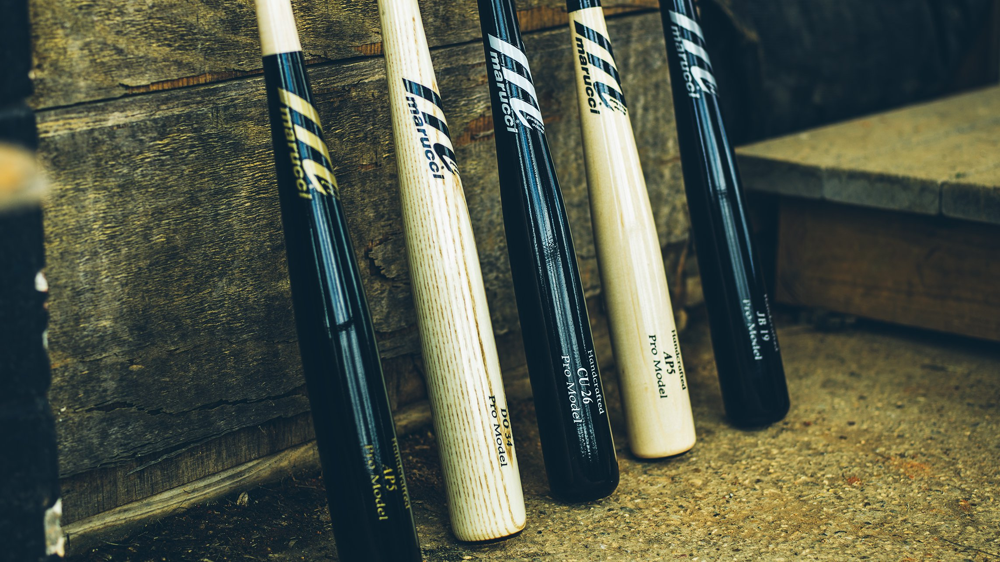

As a company founded, majority-owned, and operated by current and former Big Leaguers, Marucci is dedicated to quality and committed to providing players at every level with the tools they want and need to be successful.
MLB Player Review
"Marucci is the best bat I've ever swung. I love the bat - the feel of it, the look of it. Once I started swinging Marucci, I've never swung anything else."
Andrew McCutchen
In sports, there are no overnight success stories. Marucci knows this.
We started in a workshop with an idea and a flawless piece of maple. Then we spent hours upon hours perfecting our craft. No grand dreams of fame and fortune. Just a commitment to the few who are truly committed. The game teaches lessons that translate to life success. We provide tools for the best players to win in baseball and life – in the form of precision equipment and elite training, so that these dedicated athletes can play to the very height of their abilities and, by doing this, they pay their respects to the game, and to themselves.
Wood

Maple
Andrew McCutchen
Hit for average? Hit for power? The Marucci CUTCH22 allows you to control both with authority. Inspired by Marucci partner Andrew McCutchen, this bat features a thick tapered knob and handle to balance out the wrath of a large, explosive barrel. The balance gives speed and control; the barrel gives power and pop; you give pitchers long days and sleepless nights.
Albert Pujols
The Marucci AP5 Pro Model wood bat is built for power with a large, explosive barrel primed for some heavy mashing. A tapered knob and handle allow for more control in the hands while still maintaining that end-loaded feel power hitters crave.
Buster Posey
This bat is a bona fide bomb dropper. Inspired by Marucci Partner Buster Posey, the POSEY28 Pro Model wood bat features a massive barrel and thin handle, resulting in the end-loaded feel power hitters love and the unmistakable BOOM that goes with it.
Francisco Lindor
The Marucci LINDY12 Pro Model is the ultimate contact hitter's bat. Inspired by Marucci partner Francisco Lindor, this maple piece features a unique bell knob that's slightly flared and rounded on the end, similar to a RH6, while the thin handle and medium barrel provide the balance and consistency contact hitters need from their bat.
Custom
Custom Pro
Handcrafted For You.
Marucci Custom Pro wood bats give you the ability to customize your favorite player-inspired model to your own specifications. Select your wood type, size, colors, and personalization to create the ultimate gamer that's uniquely your own.
Colors
19 Colors For You
Baby Blue
Black
Chocolate
Fog
Green
Inferno
Laxton Cherry
Natural
Navy Blue
Orange
Pink
Purple
Red
Royal Blue
Smoke
Unfinished
Walnut
Whitewash
Yellow
Logo
The logo is everything for Marucci. it has become a famous icon, and possibly the face of baseball. Being able to choose the logo color and engraving color goves players a great opportunity to change the famous logo and make it their own.